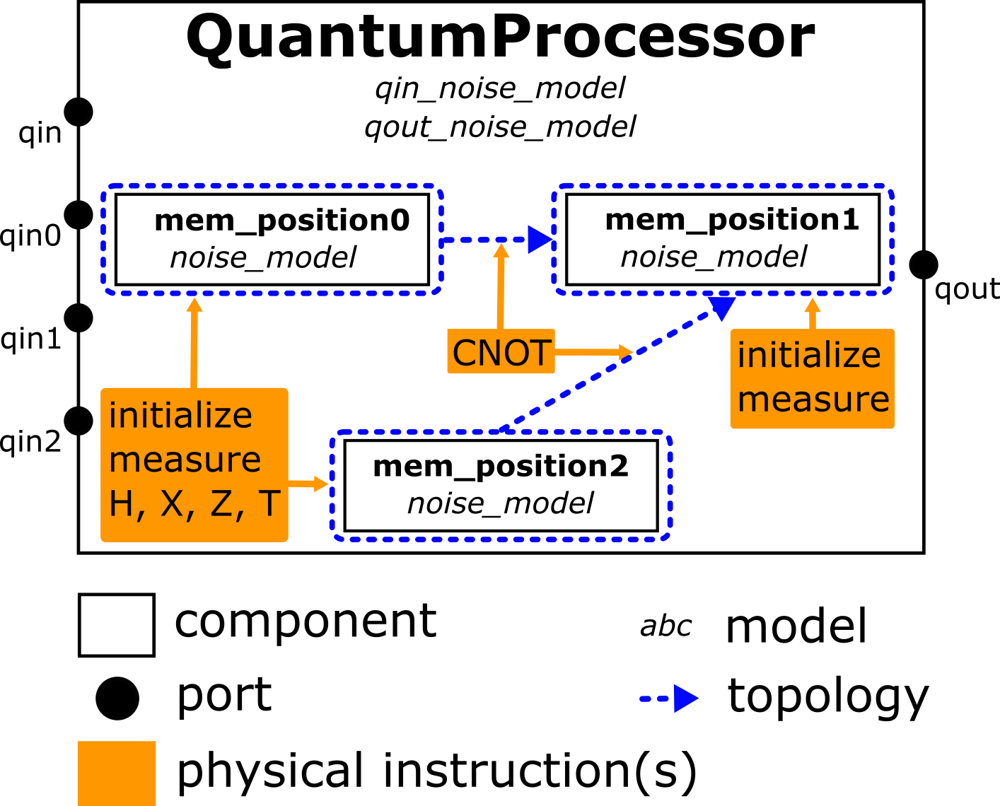

The Quantum Processor
This section of the tutorial is dedicated to the quantum processor component (QuantumProcessor), a subclass of the quantum memory (QuantumMemory) that models the (imperfect) application of quantum gates and other instructions to the stored qubits.
Learning goals
Representing quantum operations on a quantum device by instructions (essential).
Using a quantum processor to model the noise and delays of physical instructions (advanced).
Creating quantum programs to programmatically apply instructions (advanced).
Advanced sections are denoted by an asterix (*).
Instructions for quantum memory devices
Instructions (Instruction) represent low-level commands that run on a quantum memory and its subclasses; in particular the quantum processor as we will soon see.
The netsquid.components.instructions module defines subclasses that can be used to create instructions,
such as the IGate class for creating quantum gate instructions.
It also defines a set of instruction objects, for example: INSTR_INIT for initialising qubits, INSTR_MEASURE for measuring a qubit, INSTR_H for applying a Hadamard gate, etc.
Instructions can be applied to a quantum memory by using the instructions directly as callable objects with the quantum memory as the first argument:
>>> import netsquid.components.instructions as instr
>>> from netsquid.components.qmemory import QuantumMemory
...
>>> qmemory = QuantumMemory('ExampleQMem', num_positions=1)
>>> instr.INSTR_INIT(qmemory, positions=[0])
>>> instr.INSTR_H(qmemory, positions=[0])
>>> instr.INSTR_MEASURE_X(qmemory, positions=[0])
[0]
New instructions can be created using the provided base subclasses, for instance a custom gate instruction can instantiated as follows:
>>> from netsquid.qubits import operators as ops
>>> INSTR_XY = instr.IGate("xy_gate", ops.X * ops.Y)
The QuantumProcessor base class adds specialised methods to the QuantumMemory for handling instructions.
For example, the execute_instruction() method can be used to execute instructions, as we demonstrate for an entangling circuit:
>>> from netsquid.components.qprocessor import QuantumProcessor
...
>>> qproc = QuantumProcessor("ExampleQPU", num_positions=3,
... fallback_to_nonphysical=True)
>>> qproc.execute_instruction(instr.INSTR_INIT, [0, 1])
>>> qproc.execute_instruction(instr.INSTR_H, [1])
>>> qproc.execute_instruction(instr.INSTR_CNOT, [1, 0])
>>> m1 = qproc.execute_instruction(instr.INSTR_MEASURE, [0])
>>> m2 = qproc.execute_instruction(instr.INSTR_MEASURE, [1])
>>> m1 == m2 # Measurement results are both the same (either both 1 or both 0)
True
>>> ns.sim_time()
0.0
Physical instructions *
Instructions are intended to be agnostic of the quantum memory or processor they are executed on.
As such, instructions as executed above are effectively non-physical:
they are applied instantly and without any errors.
To model an instruction’s physical duration and any associated error models a quantum processor can specify a separate set of physical instructions (PhysicalInstruction) that executed instructions can mapped to.
Let us consider an example of how to specify physical instructions for a quantum processor that has the following (toy) characteristics:
Three qubit memory positions.
Qubits on any of the memory positions experience depolarisation noise when idle.
Initialisation of qubits on all of the memory positions takes 3 nanoseconds.
The single qubit gates Hadamard, X, Z and S can be applied to memory positions 0 and 2 and take 1 nanosecond.
Applying the CNOT gate takes 4 nanoseconds and can only have memory position 1 as its target.
All qubits can be measured in the standard (Z) basis, which takes 7 nanoseconds. A measurement of position 1 suffers depolarising noise.
Furthermore, some of the instructions can be executed in parallel on different qubits e.g. applying an X Gate on position 0 can be done simultaneously to applying a Hadamard gate on position 2. A setup that implements the physical constraints above is:
>>> from netsquid.components.models.qerrormodels import DepolarNoiseModel
>>> from netsquid.components.qprocessor import PhysicalInstruction
...
>>> phys_instructions = [
... PhysicalInstruction(instr.INSTR_INIT, duration=3),
... PhysicalInstruction(instr.INSTR_H, duration=1, parallel=True, topology=[0, 2]),
... PhysicalInstruction(instr.INSTR_CNOT, duration=4, parallel=True,
... topology=[(0, 1), (2, 1)]),
... PhysicalInstruction(instr.INSTR_X, duration=1, parallel=True, topology=[0, 2]),
... PhysicalInstruction(instr.INSTR_Z, duration=1, parallel=True, topology=[0, 2]),
... PhysicalInstruction(instr.INSTR_S, duration=1, parallel=True, topology=[0, 2]),
... PhysicalInstruction(
... instr.INSTR_MEASURE, duration=7, parallel=False,
... quantum_noise_model=DepolarNoiseModel(depolar_rate=0.01, time_independent=True),
... apply_q_noise_after=False, topology=[1]),
... PhysicalInstruction(instr.INSTR_MEASURE, duration=7, parallel=True,
... topology=[0, 2])
... ]
>>> noisy_qproc = QuantumProcessor("NoisyQPU", num_positions=3,
... mem_noise_models=[DepolarNoiseModel(1e7)] * 3,
... phys_instructions=phys_instructions)
To limit the availability of physical instructions to specific memory positions we can specify a topology. The physical instructions with their topologies are shown in the schematic below.
{kind=link}
The quantum processor, unless initialised with fallback_to_nonphysical=True,
will throw an error when it cannot map the instruction to be executed to a matching physical instruction:
>>> noisy_qproc.execute_instruction(instr.INSTR_Y, [0])
Traceback (most recent call last):
...
netsquid.components.qprocessor.MissingInstructionError: ...
If we now execute the qubit initialisation instruction on memory positions 0 and 1 we expect it to take 3 nanoseconds:
>>> ns.sim_time()
0.0
>>> noisy_qproc.execute_instruction(instr.INSTR_INIT, [0, 1])
>>> ns.sim_run()
>>> ns.sim_time()
3.0
Problems arise, however, if we attempt to execute the rest of our entangling circuit: trying to execute instructions while earlier instructions have not finished yet will result in an error indicating that the processor is still busy.
>>> noisy_qproc.execute_instruction(instr.INSTR_H, [0])
>>> noisy_qproc.execute_instruction(instr.INSTR_CNOT, [0, 1])
Traceback (most recent call last):
...
netsquid.components.qprocessor.ProcessorBusyError: ...
To prevent having to call ns.sim_run() between each instruction we can turn to quantum programs to apply instructions sequentially, and even conditionally on previous the outcome of previous instructions.
Quantum programs *
Quantum processors can execute quantum programs (QuantumProgram).
Such a program consists of instruction(s) that are run in sequences.
The instructions are by default run in parallel if the quantum processor and physical instructions support this.
Furthermore, a program also supports control logic.
Similar to instructions, a program is intended to be agnostic to the type of quantum processor it is run on.
The qubit indices referred to in a program are mapped to the memory positions on a quantum processor when the program is executed,
which also maps the abstract instructions to the available physical instructions.
For example in its most basic form a quantum program can be created as a single sequence of instructions:
>>> from netsquid.components.qprogram import QuantumProgram
...
>>> prog = QuantumProgram(num_qubits=2)
>>> q1, q2 = prog.get_qubit_indices(2) # Get the qubit indices we'll be working with
>>> prog.apply(instr.INSTR_INIT, [q1, q2])
>>> prog.apply(instr.INSTR_H, q1)
>>> prog.apply(instr.INSTR_CNOT, [q1, q2])
>>> prog.apply(instr.INSTR_MEASURE, q1, output_key="m1")
>>> prog.apply(instr.INSTR_MEASURE, q2, output_key="m2")
And can then be executed on the processor (using the same noisy processor that was created above):
>>> noisy_qproc.reset()
>>> ns.sim_reset()
>>> noisy_qproc.execute_program(prog, qubit_mapping = [2, 1])
>>> ns.sim_run()
>>> ns.sim_time()
15.0
>>> prog.output["m1"] == prog.output["m2"]
True
>>> prog.output["m1"], prog.output["m2"]
1, 1
Such a single sequence of instructions can also be created by subclassing the QuantumProgram class.
>>> class EntangleProgram(QuantumProgram):
... default_num_qubits = 2
...
... def program(self):
... q1, q2 = self.get_qubit_indices(2)
... self.apply(instr.INSTR_INIT, [q1, q2])
... self.apply(instr.INSTR_H, q1)
... self.apply(instr.INSTR_CNOT, [q1, q2])
... self.apply(instr.INSTR_MEASURE, q1, output_key="m1")
... self.apply(instr.INSTR_MEASURE, q2, output_key="m2")
... yield self.run()
This program can be executed on multiple processors, as long as they support the instructions. Depending on the processor the time and noise that is applied might differ.
Multiple sequences are defined using repeated yield statements calling the run() method. During run() instructions store their output in a local state dictionary called output. For example here the measurement results are stored in output[“m1”] and output[“m2”]. Control logic can be used to select which instructions are called.
>>> class ControlledQProgram(QuantumProgram):
... default_num_qubits = 3
...
... def program(self):
... q1, q2, q3 = self.get_qubit_indices(3)
... self.apply(instr.INSTR_H, q1)
... self.apply(instr.INSTR_MEASURE, q1, output_key="m1")
... yield self.run()
... # Depending on outcome on q1 either flip q2 or q3
... if self.output["m1"][0] == 0:
... self.apply(instr.INSTR_X, q2)
... else:
... self.apply(instr.INSTR_X, q3)
... self.apply(instr.INSTR_MEASURE, q2, output_key="m2")
... self.apply(instr.INSTR_MEASURE, q3, output_key="m3")
... yield self.run(parallel=False)
The parallel parameter in the run() method can be used to control whether the quantum processor attempts to run the sequence in parallel. To do so, both the matching PhysicalInstruction and quantum processor must support this.
Local teleportation example using programs *
Let us use programs to perform a local teleportation example between the qubits on a single quantum processor with imperfect physical instructions i.e. teleport the state of a qubit on position 0 to memory position 2.
First, qubit 1 and 2 will need to be entangled. This is done in parallel to creating the state to teleport. A Bell measurement is performed on qubit 0 and 1 once the 3 qubits are ready. The measurement results need to be known before the correction operations can be applied. So the program first needs to run before the correction can take place.
>>> noisy_qproc.reset()
>>> ns.sim_reset()
>>> ns.set_qstate_formalism(ns.QFormalism.DM)
...
>>> class TeleportationProgram(QuantumProgram):
... default_num_qubits = 3
...
... def program(self):
... q0, q1, q2 = self.get_qubit_indices(3)
... # Entangle q1 and q2:
... self.apply(instr.INSTR_INIT, [q0, q1, q2])
... self.apply(instr.INSTR_H, q2)
... self.apply(instr.INSTR_CNOT, [q2, q1])
... # Set q0 to the desired state to be teleported:
... self.apply(instr.INSTR_H, q0)
... self.apply(instr.INSTR_S, q0)
... # Bell measurement:
... self.apply(instr.INSTR_CNOT, [q0, q1])
... self.apply(instr.INSTR_H, q0)
... self.apply(instr.INSTR_MEASURE, q0, output_key="M1")
... self.apply(instr.INSTR_MEASURE, q1, output_key="M2")
... yield self.run()
... # Do corrections:
... if self.output["M2"][0] == 1:
... self.apply(instr.INSTR_X, q2)
... if self.output["M1"][0] == 1:
... self.apply(instr.INSTR_Z, q2)
... yield self.run()
...
...
>>> noisy_qproc.execute_program(TeleportationProgram())
>>> ns.sim_run()
>>> qubit = noisy_qproc.pop(2)
>>> fidelity = ns.qubits.fidelity(
... qubit, ns.qubits.outerprod((ns.S*ns.H*ns.s0).arr), squared=True)
>>> print(f"{fidelity:.3f}")
0.922
Additional features *
The parameter physical can be used to indicate whether a quantum processor should match the instruction to a PhysicalInstruction or execute it instantly and without noise, i.e. non-physical.
>>> class CheatingQProgram(QuantumProgram):
... default_num_qubits = 2
...
... def program(self):
... q1, q2 = self.get_qubit_indices(2)
... self.apply(instr.INSTR_X, q1)
... self.apply(instr.INSTR_SIGNAL, physical=False)
... self.apply(instr.INSTR_Z, q1, physical=False)
... self.apply(instr.INSTR_CNOT, [q1, q2])
... self.apply(instr.INSTR_MEASURE, q1, output_key="m1", physical=False)
... self.apply(instr.INSTR_MEASURE, q2, output_key="m2", physical=False)
... yield self.run()
A program can load in another program using the load() method.
Loaded programs share the output dictionary.
Loading programs works to arbitrary depth.
>>> class LoadingQProgram(QuantumProgram):
... default_num_qubits = 2
...
... def program(self):
... # Run a regular sequence
... q1, q2 = self.get_qubit_indices(2)
... self.apply(instr.INSTR_X, q1)
... yield self.run()
... # Load and run another program
... yield from self.load(CheatingQProgram)
Programs can be concatenated using the addition operator, where one of the operands can also be a class instead of an instance:
>>> prog3 = prog1 + prog2
Programs can be repeated using the multiplication operator:
>>> prog2 = prog1 * 5
In all cases the output dictionary is shared among the combined programs.
What is next?
Now we know how to apply noisy quantum operations on quantum processors using quantum programs. We can use these programs in our protocols to finalize a full working teleportation example with noise on the memory, channels and operations.